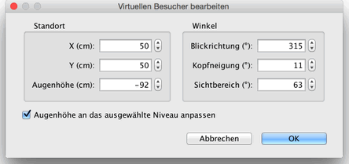

| Ändern der 3D-Ansicht | |||
Wählen Sie 3D-Ansicht > Luftansicht oder 3D-Ansicht > Virtuelles Begehen um zwischen den zwei möglichen 3D-Ansichten zu wechseln.
Wenn Luftansicht ausgewählt ist, zeigt die 3D-Ansicht ihre Wohnung
in drei Dimensionen von einem erhöhtem Standpunkt aus. In diesem Modus
wird die Kamera gedreht indem Sie die Maus nach links oder rechts bewegen
und dabei die linke Taste gedrückt halten. Indem Sie die Maus bei gedrückter
linker Maustaste nach vorn oder nach hinten bewegen, kippen Sie die
3D-Ansicht. Das Mausrad zoomt Sie Ansicht herein oder heraus.
Wenn Virtuelles Begehen ausgewählt ist, wird im Plan ein virtueller Besucher eingezeichnet. Dessen Lokation und Blickwinkel werden simultan erneuert mit denen der 3D-Ansicht. Dieser virtuelle Besucher ist von vier Indikatoren umgeben, die seine Blickrichtung anzeigen.
|


|
Ist der Mauszeiger über einer Schulter des Besuchers oder auf
dem Rücken, verändert der Mauszeiger sich um anzuzeigen, dass
Sie diesen Punkt per Drag&Drop bewegen können, um den Winkel
des Kopfes, des Körpers oder den Blickpunkt zu verändern.
Während Sie den Mausbutton drücken, zeigt ein Tooltip den
veränderten Wert an.  In diesem Dialogfeld können Sie das Blickfeld des virtuellen Besuchers anpassen und einstellen, ob die Augenhöhe entsprechend dem aktuell ausgewählten Niveau angepasst werden soll. Mit letzterer Option bewegt sich der virtuelle Besucher entsprechend dem ausgewählten Niveau nach oben oder unten. Der Menüeintrag 3D-Ansicht > 3D-Ansicht bearbeiten zeigt das Einstellungsfeld für die 3D-Ansicht an, in dem die Farbe und die Textur des Bodens und des Himmels, die Beleuchtungshelligkeit sowie die Transparenz der Wände (und Böden) eingestellt werden kann.
|

|